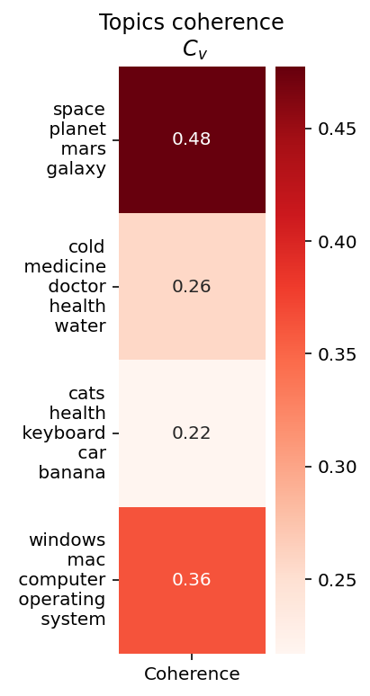

Topic Coherence in Practice#
Let’s evaluate some topics using the dataset 20newsgroups as a reference corpus.
%config InlineBackend.figure_format='retina'
import re
import pandas as pd
import seaborn as sns
import matplotlib.pyplot as plt
from sklearn.datasets import fetch_20newsgroups
from nltk.corpus import stopwords
from nltk.collocations import BigramCollocationFinder, BigramAssocMeasures
from gensim.models.coherencemodel import CoherenceModel
from gensim.corpora.dictionary import Dictionary
texts, _ = fetch_20newsgroups(
subset="all", remove=("headers", "footers", "quotes"), return_X_y=True
)
tokenizer = lambda s: re.findall("\w+", s.lower())
texts = [tokenizer(t) for t in texts]
stopwords = set(stopwords.words("english"))
texts = [[w for w in t if w not in stopwords and len(w) > 1] for t in texts]
finder = BigramCollocationFinder.from_words(sum(texts[:100], []))
bgm = BigramAssocMeasures()
score = bgm.mi_like
collocations = {"_".join(bigram): pmi for bigram, pmi in finder.score_ngrams(score)}
# Top 10 collocations
collocations = pd.DataFrame(
sorted(collocations.items(), key=lambda x: x[1], reverse=True),
columns=["bigram", "score"],
)
collocations.head(10)
| bigram | score | |
|---|---|---|
| 0 | united_states | 7.111111 |
| 1 | et_al | 5.142857 |
| 2 | greatly_appreciated | 3.000000 |
| 3 | hymenaeus_beta | 3.000000 |
| 4 | proving_existence | 3.000000 |
| 5 | 3d_studio | 2.666667 |
| 6 | mozumder_proving | 2.250000 |
| 7 | _equinox_iii | 2.000000 |
| 8 | alex_delvecchio | 2.000000 |
| 9 | annals_cirp | 2.000000 |
# Creating some random topics
topics = [
["space", "planet", "mars", "galaxy"],
["cold", "medicine", "doctor", "health", "water"],
["cats", "health", "keyboard", "car", "banana"],
["windows", "mac", "computer", "operating", "system"],
]
# Creating a dictionary with the vocabulary
word2id = Dictionary(texts)
# Coherence model
cm = CoherenceModel(topics=topics, texts=texts, coherence="c_v", dictionary=word2id)
coherence_per_topic = cm.get_coherence_per_topic()
topics_str = ["\n ".join(t) for t in topics]
data_topic_score = pd.DataFrame(
data=zip(topics_str, coherence_per_topic), columns=["Topic", "Coherence"]
)
data_topic_score = data_topic_score.set_index("Topic")
fig, ax = plt.subplots(figsize=(2, 6))
ax.set_title("Topics coherence\n $C_v$")
sns.heatmap(
data=data_topic_score,
annot=True,
square=True,
cmap="Reds",
fmt=".2f",
linecolor="black",
ax=ax,
)
plt.yticks(rotation=0)
ax.set_xlabel("")
ax.set_ylabel("")
fig.show()
